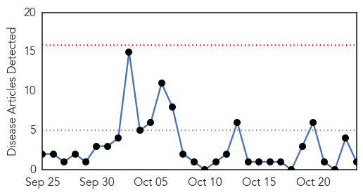
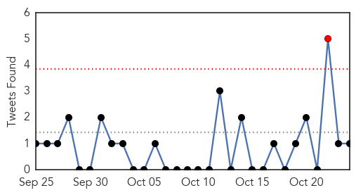
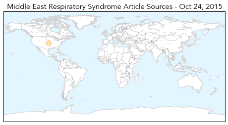
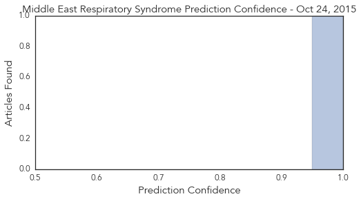

MERS
30-Day Web Trend
0 alerts, 0 warnings

30-Day Twitter Trend
4 alerts, 0 warnings

Article Locations
Article Confidences
Top Articles:
Top Tweets:
-
No tweets found for Oct 24, 2015
Ebola
30-Day Web Trend
4 alerts, 0 warnings

30-Day Twitter Trend
8 alerts, 0 warnings

Article Locations

Article Confidences

Top Articles:
- 1.000
- How a team of scientists in Borneo are working up to stop the next pandemic
- 1.000
- Mystery Deaths in Sierra Leone Spread Fear of Ebola Relapses
- 1.000
- Ebola nurse Pauline Cafferkey 'critically ill' in hospital
- 0.999
- Sierra Leone Struggles With Ebola Survivors' Health Complications
- 0.999
- 5 People Under Surveillance Over Ebola
- 0.999
- Can Ebola Survive in a Man's Semen?
- 0.999
- Mystery deaths in Sierra Leone spread fear of Ebola relapses
- 0.998
- United Kingdom nurse critically ill after Ebola infection returns
- 0.984
- Scottish Ebola nurse 'recovering'
- 0.984
- Why Billions in Foreign Aid Failed to Prevent Ebola Outbreak — NOVA Next
- 0.979
- Nurse Kaci Hickcox Sues Chris Christie For Civil Liberties Violations During Ebola Quarantine
- 0.978
- United States nurse quarantined over ebola fears sues
- 0.935
- Nurse quarantined over Ebola fears sues Gov. Chris Christie
- 0.899
- FG, ECOWAS to establish Centre for Disease Control
- 0.874
- Ebola Nurse Sues Chris Christie
- 0.863
- Ebola nurse sues Chris Christie
- 0.798
- Page not found • Newslines
- 0.768
- Nurse quarantined over Ebola fears sues Gov. Chris Christie
- 0.761
- UN: More studies needed on new malaria shots before using it - Crescent-News
- 0.759
- Jim Campbell : "It is high time to stop viewing public health as nothing but expense: it is an economic motor"
- 0.732
- Gilead Provides Update on Investigational Compound, GS-5734, for the Treatment of Ebola Virus Disease
- 0.700
- FG to Establish Regional Centre for Disease Control in Nigeria
- 0.687
- Ebola Nurse Sues Chris Christie
- 0.660
- Bad science & toxic politics; Misstep that ruined Ghana’s Ebola Vaccine Trial
- 0.634
- Deadly Viruses and Saving Lives
- 0.582
- Nurse who was quarantined during Ebola scare sues Gov. Chris Christie
- 0.513
- Castro Pocketed WHO Funds Destined for Ebola Health Workers
Top Tweets:
- 0.942
- Liberia: Health complications threaten Ebola survivors' lives - https://t.co/xIlBnjgIzO ebola
- 0.940
- Insight into a Humanitarian Crisis: The Ebola Outbreak - https://t.co/SiG8MsL8P5 ebola
- 0.930
- United States nurse quarantined over ebola fears sues - https://t.co/mZCCq3DzqD ebola
- 0.922
- Ebola virus can live up to nine months in semen: CDC - https://t.co/IxcD7BHWeR ebola
- 0.922
- Ebola virus can live up to nine months in semen: CDC - https://t.co/8w2NG9CNyn ebola
- 0.908
- US nurse quarantined over ebola fears sues - https://t.co/ebh2hMvwg1 ebola
- 0.902
- USA nurse quarantined over ebola fears sues - https://t.co/5JXRU2g1jM ebola
- 0.901
- Effective Ebola vaccine - https://t.co/ulmlmNr1ha ebola
- 0.900
- Looking Back at the Ebola Outbreak - https://t.co/Wv5PJp0EXV ebola
- 0.874
- Nurse who contracted Ebola hospitalized - https://t.co/tBXhXA2Jke ebola
- 0.868
- ebola 0 - https://t.co/D6KsWZuN3n ebola
- 0.861
- Nurse who was quarantined during Ebola scare… - https://t.co/fwu1lUXkJu ebola
- 0.854
- Flu season: An epidemic every year - https://t.co/ycKlVwlAsJ ebola
- 0.852
- Nurse Sues State Claiming Ebola Quarantine Violated Rights - https://t.co/8LkVIsZuup ebola
- 0.848
- Condition of Scottish Nurse Suffering From Ebola Relapse Deteriorates - https://t.co/3NxH78J4fP ebola
- 0.842
- Nurse sues over Ebola lockdown - https://t.co/bEZr0OcAZn ebola
- 0.842
- Ebola-Z: Stuttgart am Abgrund (Zombie-Thriller) - https://t.co/bP6ApjLRGr ebola
- 0.841
- Ebola affected Nurse from the United Kingdom in critical condition - https://t.co/Q9rYE35hNG ebola
- 0.839
- Nurse Quarantined Over Ebola Has No Plan To Sue - https://t.co/8lHRATRjzs ebola
- 0.838
- An Ebola ill Scottish nurse again hospitalized - https://t.co/EscwIAlK9V ebola
- 0.835
- Health Secretary offers prayers for Ebola nurse Pauline Cafferkey - https://t.co/PrzdQttNl9 ebola
- 0.830
- British athletes run in Sierra Leone marathon to raise cash for Ebola orphans - https://t.co/fLNqI0P4D6 ebola
- 0.822
- Ebola nurse sues Chris Christie - Washington Examiner https://t.co/xjLKCAOx8j ebola EVD
- 0.818
- Kaci Hickox and the Ebola panic 1 year later - https://t.co/gxXh9vKlTx ebola
- 0.812
- Ebola-hit nurse 'critically ill' in London hospital - https://t.co/Xe0ZSUPhRo ebola
- 0.810
- Ebola Nurse Sues Chris Christie - https://t.co/OVfsEI8kuf ebola
- 0.806
- Reporter - Stigmatized: Life after Ebola - https://t.co/xuFje2iZeg ebola
- 0.805
- Nurse Quarantined During Ebola Panic Sues Chris Christie - 5 hours ago - https://t.co/pRZKf7cO4k ebola
- 0.805
- Nurse Kaci Hickox sues Gov. Christie over Ebola quarantine - https://t.co/z7xnhXR5FJ ebola
- 0.803
- Loss Health & Money: Ebola Survivors' Greatest Concerns - https://t.co/a6BQOTfxt9 ebola
- 0.789
- Nurse Who Had Ebola Re-hospitalized and Now Critically Ill - https://t.co/W9m7booy56 ebola
- 0.789
- Nurse Who Had Ebola Re-hospitalized and Now Critically Ill - https://t.co/V1mZk1MLhw ebola
- 0.788
- Doctor to patient: An Ebola survivor's odyssey - https://t.co/KXESswu4JF ebola
- 0.783
- United Kingdom nurse critically ill after Ebola infection returns - https://t.co/bW6rHeoHdM ebola
- 0.774
- Ebola: what it teaches us about medical ethics. A response to Angus Dawson - https://t.co/4sfLX90XAl ebola
- 0.756
- New technology for diagnosing Ebola - https://t.co/Kfx7hD6jiE ebola
- 0.743
- Specialized tests for Liberia Ebola survivors - https://t.co/fzMOlqk3Br ebola
- 0.738
- Bill Spadea: Throw out the Ebola nurse's lawsuit (Watch) - https://t.co/ZcaxOb4t2O ebola
- 0.729
- Physician who survived Ebola celebrates with healthcare staff - https://t.co/VQJEzZt0Zc ebola
- 0.723
- Nurse Kaci Hickox sues Gov. Chris Christie over Ebola quarantine - MSNBC https://t.co/yLuSKrhLxM ebola EVD
- 0.719
- Ebola nurse Pauline Cafferkey 'critically ill' in hospital - https://t.co/Z3sUJOciG8 ebola
- 0.716
- Condition of hospitalized Ebola nurse in UK worsens - https://t.co/RLrANjCb4f ebola
- 0.715
- Ebola may persist in semen for nine months study shows - https://t.co/uJNkiBUa96 ebola
- 0.706
- Ebola la la song speed up - https://t.co/tRfgoT3n7P ebola
- 0.701
- Ebola can linger in survivors for 9 months: research - https://t.co/bJJccHDOTP ebola
- 0.695
- FDA scientist talks "new normal" of Ebola TEDxUSU excites - The Herald Journal https://t.co/holxgegBMj ebola EVD
- 0.679
- Nurse Kaci Hickcox Sues Chris Christie For Civil Liberties Violations During Ebola Quarantine - https://t.co/4dZcU6rHMh ebola
- 0.675
- Bad science & toxic politics; Misstep that ruined Ghana's Ebola Vaccine Trial - https://t.co/oo8JG0B3w2 ebola
- 0.660
- When cured applicable Ebola patient again in critical condition - https://t.co/QcS64BWCGf ebola
- 0.648
- Ophthalmologists need to be aware of possibility of Ebola in eyes of survivors - Healio https://t.co/tsvNPlkmlz ebola EVD
Showing top 50 tweets...